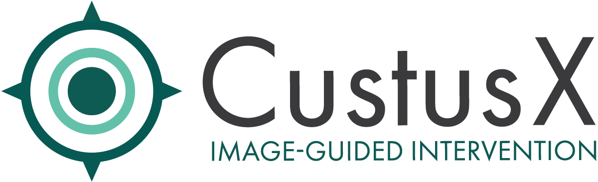

CustusX is a Navigation System for Image-Guided Intervention developed by the team of clinicians and engineers at the Norwegian National Competence Centre for Ultrasound and Image-Guided Therapy. From its start fifteen years ago, CustusX has been used in different clinical areas like neuro-, laparoscopic- and vascular surgery, interventional radiology and bronchoscopy. The navigation system has been designed to merge and visualise information from multiple medical imaging modalities, but with a focus on ultrasound and intra-procedure imaging.
The application and code is free to download and use under a BSD-3 license, which means it can be used by everyone for any purpose.
The source code is available on GitLab.
SINTEF Digital
Department of Health Research
Medical Technology
P.O. Box 4760 Torgarden
NO-7465 Trondheim
Norway
CustusX is specialized software designed as a Navigation System for Image-Guided Intervention. It serves researchers in medical imaging and surgical navigation by integrating images, tracked instruments, and display systems into a cohesive platform.
The system emphasizes intraoperative ultrasound applications, though it supports multiple imaging modalities including CT, MRI, and fluoroscopy. It enables real-time tracking and visualization of surgical instruments during minimally invasive procedures.
CustusX functions as both a customizable navigation platform and a development toolkit. Researchers can conduct clinical studies or create specialized applications for particular surgical procedures and imaging techniques.
The software is free to download and use under a BSD-3 license, which means it can be used by anyone for any purpose.
Clinical use cases and demonstrations are available on the USIGT YouTube channel.
CustusX is developed and maintained by the Norwegian National Competence Centre for Ultrasound and Image-Guided Therapy at SINTEF Medical Technology, in collaboration with clinicians and engineers at St. Olavs Hospital, Trondheim University Hospital.
The project has received funding from the Norwegian Research Council and several EU projects. Related applications built on the CustusX platform include Fraxinus, NorMIT-Nav, and NAVICAD.
When publishing scientific work that uses CustusX, please cite the following publication:
Christian Askeland, Ole Vegard Solberg, Janne Beate Lervik Bakeng, Ingerid Reinertsen, Geir Arne Tangen, Erlend Fagertun Hofstad, Daniel Høyer Iversen, Cecilie Våpenstad, Tormod Selbekk, Thomas Langø, Toril A. Nagelhus Hernes, Håkon Olav Leira, Geirmund Unsgård, Frank Lindseth. CustusX: an open-source research platform for image-guided therapy, International Journal of Computer Assisted Radiology and Surgery, 09/2015, DOI: 10.1007/s11548-015-1292-0
Select a type of documentation depending on your needs:
Guides and references for using CustusX in your research workflow.
API references, architecture overview, and instructions for extending CustusX.
CustusX releases are published on GitLab. Each release includes installers and release notes describing what has changed.
Download the latest CustusX release from GitLab:
View Releases on GitLab